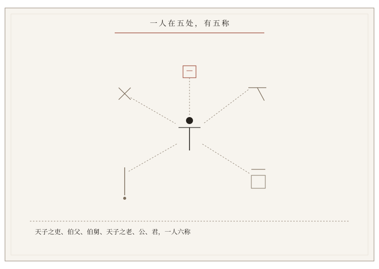

曲礼下 · 二·五十 · 第 173 课
二伯见天子，摈者传辞称「天子之吏」；天子同姓呼伯父、异姓呼伯舅；二伯自称于诸侯曰天子之老，于外曰公，于其国曰君。
说什么事：同一个人，四处四称。
落在哪一层：礼，兼及礼意。论称谓之随境而变。
为何编在此位：上节立伯之体，此节言伯之称。体而后称。
【经】其擯於天子也，曰「天子之吏」。天子同姓謂之「伯父」，異姓謂之「伯舅」。自稱於諸侯曰「天子之老」，於外曰「公」，於其國曰「君」。
【注】擯者辭也。《春秋傳》曰「王命委之三吏」，謂三公也。稱之以父與舅，親親之辭也。外，自其私土之外，天子畿內。
【疏】此是二伯也。摈谓天子接宾之人也。若摈者传辞于天子，则称此二伯为「天子之吏」也。亦当言名也，记者略，可知也。然摈呼在朝三公亦为天子之吏。若然，《玉藻》云「伯曰天子之力臣」者，谓介传命称天子力臣；摈者受辞，传于天子，则曰「天子之吏」。引《左传》成二年晋使巩朔献齐捷于王，王命委之三吏，杜预注云「三吏，三公也」，于时王不见巩朔，王命委付三公接对之，故云「委之三吏」。「天子同姓谓之伯父」者，此三公与王同姓者，王呼为伯父。伯者长大之名，父乃同姓重亲之称也。「异姓谓之伯舅」者，异族重亲之名也，异族无父称，故呼为伯舅，亦亲之故也。案晋文公为二伯，《左传》僖二十八年云「王曰叔父」，不称伯者，以州牧之礼命之，故称叔也；若以二伯之礼称之，则曰伯父，故晋或称伯，或称叔也。「自称于诸侯曰天子之老」者，二伯若与九州及四夷之诸侯言，己自谓「天子之老」，系于天子言之，以威远国也。「于外曰公」者，外者，其私土采地之外也，而犹在王畿之内，如周公食邑于周，向国外之人，其自称则曰公也。「于其国曰君」者，其国采地内也，若与采地内臣民言，则自称曰君。
摈 接宾之人。注「摈者辞也」，谓摈者所传之辞。
三吏 注「谓三公也」。
伯父、伯舅 注「称之以父与舅，亲亲之辞也」。伯，长大之名。
天子之老 系于天子以自称，威远国。
外 注「自其私土之外，天子畿内」。与下文「其国」相对。
二伯见天子，摈者传辞称「天子之吏」。天子对他同姓的称伯父，异姓的称伯舅。他自己对诸侯称「天子之老」，在王畿之内称「公」，在本国称「君」。
此节全在称谓。同一位二伯，天子叫他「吏」，王叫他「伯父」，诸侯面前他自称「天子之老」，畿内自称「公」，本国自称「君」。五个称呼，五种关系，一个也不重复。
第一层 吏与力臣 疏分辨极细：介传命称「天子之力臣」，摈者受辞传于天子则称「天子之吏」。同一人，站在哪一环上说话，称呼就不同。礼对「谁在说」比对「说谁」更在意。
第二层 父与舅 注「亲亲之辞」。同姓呼父，异姓呼舅——异族无父之称，只能借舅。一个称呼里，藏着宗法的边界。
第三层 伯与叔 疏举晋文公：以州牧之礼命则称叔父，以二伯之礼称则称伯父，故晋或称伯或称叔。同一位霸主，两种称呼并行不悖，看用哪一礼。
第四层 老、公、君 对诸侯称「天子之老」，是系于天子以威远；畿内称「公」，是向国外之人；采地内称「君」，是与臣民言。三个「外」的层次，一层比一层近。
与今日何干 一个人的名片上通常只有一个头衔；礼却要求他有五个，且各有各的场合。称谓的精度，就是关系的精度。
| 左 | 右 |
|---|---|
| 摈于天子曰天子之吏 | 摈者传辞之称 |
| 介传命曰天子之力臣 | 同一人，环不同则称不同 |
| 同姓谓之伯父 | 伯，长大之名；父，重亲之称 |
| 异姓谓之伯舅 | 异族无父称，借舅 |
| 于诸侯曰天子之老 | 系于天子，以威远国 |
| 于外曰公，于其国曰君 | 皆在王畿与采地之内 |
画一个人形居中，向四方引出五道短签，签形各异：上签直指一枚方形小手（示「吏」）；左上签作两道斜交（示「父」）；右上签作一道横加一道斜（示「舅」）；左下签作一道长竖加下端一点（示「老」）；右下签作一道短横加方框（示「公」）。五签长短不一，皆不写字。居中人形极简，只画头、肩、身。赭色只用在向上那枚方手形。
